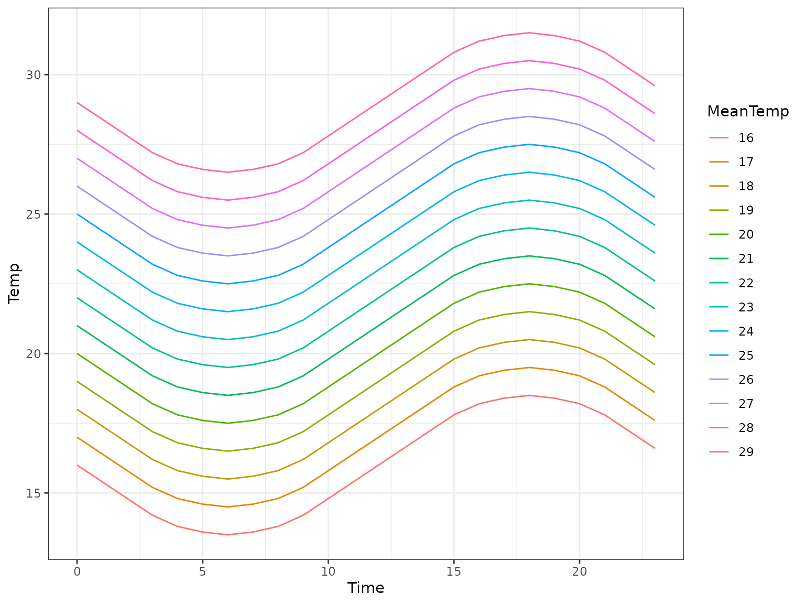
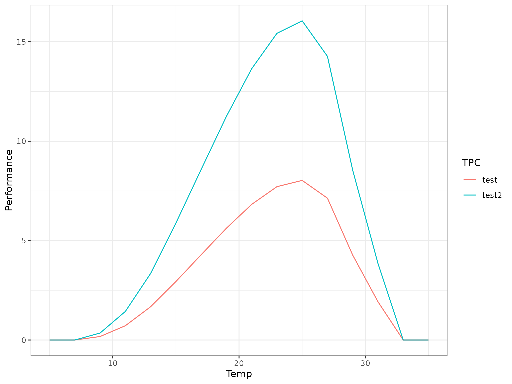
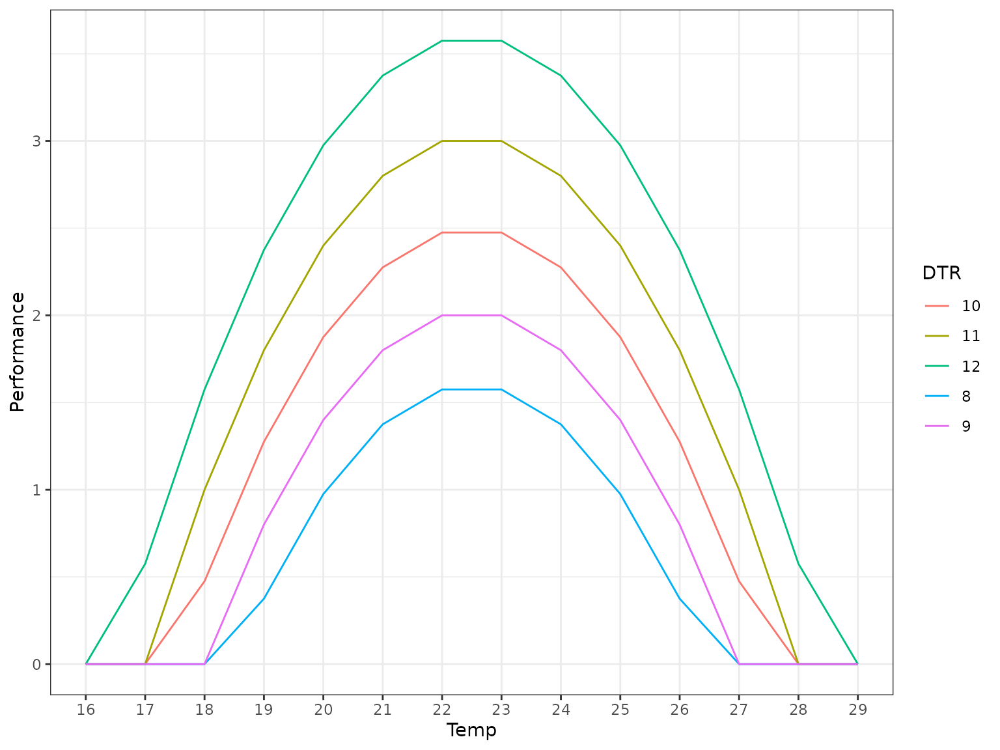
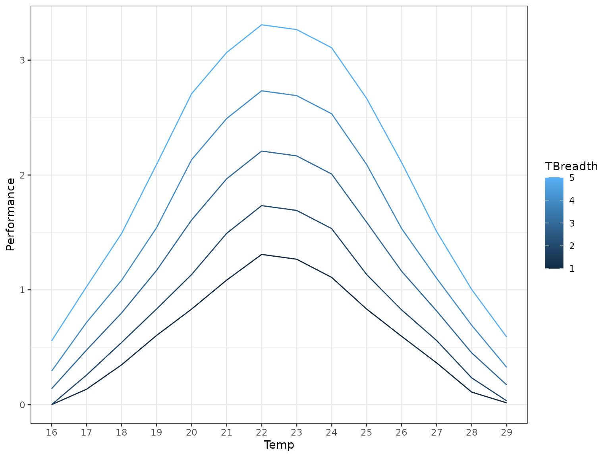

Introduction
Non-linear averaging (aka rate summation) is predicated upon the concept that the average of a function is not the same as the function of the average.
This is known as Jensen’s inequality, and is a powerful concept to aid in understanding results from the natural world.
In thermal biology, Jensen’s inequality rears its head when considering fluctuating temperatures.
Fluctuating temperatures
If you wish to simply test the responses of an organism at a constant temperature, you can hold them at that temperature and measure their performance (e.g. growth rate).
That said, temperatures in nature are rarely stationary over the scale of a day: midday is usually warmer than the dead of night due to radiant heating from the sun.
Given this, when an organism is nominally at a daily temperature of 20°C, it is actually experiencing a range of temperatures around that value (say 10°C-30°C).
According to Jensen’s inequality, for a function that defines trait performance, taking is not the same as . As such, researchers commonly use non-linear averaging (NLA) to calculate instead.
Averaging curves with functional forms
The simplest scenario for averaging is when you have a function in r for (a good source for these functions is the rTPC package).
When you have both the function and its associated parameterisation (e.g. from fitting the TPC to a set of data), computing is trivial.
nla provides a method to do this at scale on a batch of
tpcs at once, given a batch of daily temperature curves.
For this example we are going to use the
rTPC::briere2_1999() TPC function as our base TPC.
Parameterising the TPC
Usually you would derive the parameters to be used in your TPC function from fitting the curve, however in this case we have not done that as we have no data.
rTPC::briere2_1999() has 5 parameters, none of which
have default values:
formals(rTPC::briere2_1999)
#> $temp
#>
#>
#> $tmin
#>
#>
#> $tmax
#>
#>
#> $a
#>
#>
#> $bWe will need to provide all of these parameters to the TPC in some
way. This is done in nla by providing a named list
of parameters:
param_list <- list(
"a" = c(0.01, 0.02),
"b" = 2,
"tmin" = 10,
"tmax" = 30,
"labels" = c("test", "test2")
)A few things to note here:
- The
tempparameter will be filled in bynla - All TPC parameters without defaults must be present in the parameter list.
- Normal vector recycling rules apply, so each entry in the list must either be a vector of the same length, or a single value (which will be used for each TPC run).
- The
labelsentry in the list allows your to label the output rows. This is not required but can be useful.
Generating the daily temperature curve
Alongside the TPC, we also require a daily temperature curve (or set of curves) to define the fluctuating temperatures we wish to account for.
nla provides a set of functions for generating these
curves, which all start with dt_. For this example let’s
use a simple sine wave at various mean temperatures:
dailytemps <- dt_sin(dtr = 5, tbar = seq(5,35, 2), sunrise = 6, resolution = 1, clamp = TRUE)
dailytemps
#> 5 7 9 11 13 15 17 19 21 23 25 27 29 31 33
#> 6 5.0 5.0 6.5 8.5 10.5 12.5 14.5 16.5 18.5 20.5 22.5 24.5 26.5 28.5 30.5
#> 7 5.0 5.0 6.6 8.6 10.6 12.6 14.6 16.6 18.6 20.6 22.6 24.6 26.6 28.6 30.6
#> 8 5.0 5.0 6.8 8.8 10.8 12.8 14.8 16.8 18.8 20.8 22.8 24.8 26.8 28.8 30.8
#> 9 5.0 5.2 7.2 9.2 11.2 13.2 15.2 17.2 19.2 21.2 23.2 25.2 27.2 29.2 31.2
#> 10 5.0 5.8 7.8 9.8 11.8 13.8 15.8 17.8 19.8 21.8 23.8 25.8 27.8 29.8 31.8
#> 11 5.0 6.4 8.4 10.4 12.4 14.4 16.4 18.4 20.4 22.4 24.4 26.4 28.4 30.4 32.4
#> 12 5.0 7.0 9.0 11.0 13.0 15.0 17.0 19.0 21.0 23.0 25.0 27.0 29.0 31.0 33.0
#> 13 5.6 7.6 9.6 11.6 13.6 15.6 17.6 19.6 21.6 23.6 25.6 27.6 29.6 31.6 33.6
#> 14 6.2 8.2 10.2 12.2 14.2 16.2 18.2 20.2 22.2 24.2 26.2 28.2 30.2 32.2 34.2
#> 15 6.8 8.8 10.8 12.8 14.8 16.8 18.8 20.8 22.8 24.8 26.8 28.8 30.8 32.8 34.8
#> 16 7.2 9.2 11.2 13.2 15.2 17.2 19.2 21.2 23.2 25.2 27.2 29.2 31.2 33.2 35.0
#> 17 7.4 9.4 11.4 13.4 15.4 17.4 19.4 21.4 23.4 25.4 27.4 29.4 31.4 33.4 35.0
#> 18 7.5 9.5 11.5 13.5 15.5 17.5 19.5 21.5 23.5 25.5 27.5 29.5 31.5 33.5 35.0
#> 19 7.4 9.4 11.4 13.4 15.4 17.4 19.4 21.4 23.4 25.4 27.4 29.4 31.4 33.4 35.0
#> 20 7.2 9.2 11.2 13.2 15.2 17.2 19.2 21.2 23.2 25.2 27.2 29.2 31.2 33.2 35.0
#> 21 6.8 8.8 10.8 12.8 14.8 16.8 18.8 20.8 22.8 24.8 26.8 28.8 30.8 32.8 34.8
#> 22 6.2 8.2 10.2 12.2 14.2 16.2 18.2 20.2 22.2 24.2 26.2 28.2 30.2 32.2 34.2
#> 23 5.6 7.6 9.6 11.6 13.6 15.6 17.6 19.6 21.6 23.6 25.6 27.6 29.6 31.6 33.6
#> 0 5.0 7.0 9.0 11.0 13.0 15.0 17.0 19.0 21.0 23.0 25.0 27.0 29.0 31.0 33.0
#> 1 5.0 6.4 8.4 10.4 12.4 14.4 16.4 18.4 20.4 22.4 24.4 26.4 28.4 30.4 32.4
#> 2 5.0 5.8 7.8 9.8 11.8 13.8 15.8 17.8 19.8 21.8 23.8 25.8 27.8 29.8 31.8
#> 3 5.0 5.2 7.2 9.2 11.2 13.2 15.2 17.2 19.2 21.2 23.2 25.2 27.2 29.2 31.2
#> 4 5.0 5.0 6.8 8.8 10.8 12.8 14.8 16.8 18.8 20.8 22.8 24.8 26.8 28.8 30.8
#> 5 5.0 5.0 6.6 8.6 10.6 12.6 14.6 16.6 18.6 20.6 22.6 24.6 26.6 28.6 30.6
#> 35
#> 6 32.5
#> 7 32.6
#> 8 32.8
#> 9 33.2
#> 10 33.8
#> 11 34.4
#> 12 35.0
#> 13 35.0
#> 14 35.0
#> 15 35.0
#> 16 35.0
#> 17 35.0
#> 18 35.0
#> 19 35.0
#> 20 35.0
#> 21 35.0
#> 22 35.0
#> 23 35.0
#> 0 35.0
#> 1 34.4
#> 2 33.8
#> 3 33.2
#> 4 32.8
#> 5 32.6
If you look closely you’ll notice that the numbers don’t quite
match up here, this is because the above graph is generated with
clamp = FALSE to show the full daily temperature
curve.
Actually performing the averaging
Finally, to actually perform the NLA, we will use the
nla_tpc_analytic() function. This performs the NLA process
for each timepoint in the tpc (as defined by the input temperatures, the
columns in dailytemperatures).
tpcs_nla_analytic <- nla_tpc_analytic(rTPC::briere2_1999, param_list, dailytemps, minvalue = 0, default_value = 0)
tpcs_nla_analytic
#> 5 7 9 11 13 15 17 19 21
#> test 0 0 0.1759499 0.7188155 1.673702 2.939497 4.288498 5.623414 6.820992
#> test2 0 0 0.3518997 1.4376311 3.347403 5.878995 8.576997 11.246827 13.641983
#> 23 25 27 29 31 33 35
#> test 7.711899 8.026485 7.133447 4.270292 1.925617 0 0
#> test2 15.423799 16.052970 14.266895 8.540583 3.851234 0 0
Averaging empirically-derived curves
Performing NLA on empirically-derived thermal performance curves (curves of against ) is an extra challenge, as you do not necessarily have a functional form of .
nla aims to help with this problem using the
nla_tpc_empirical() function.
Generating our data
Before we go through how to perform NLA on “empirical” data, let’s generate some pseudo-data to work with.
# Our test tpc function, you would not usually have this for empirical data
test_tpcfunc <- function(temp, tmin, tmax, a) {
-1 * a * (temp - tmin) * (temp - tmax) * (tmax > temp) * (tmin < temp)
}
# Generate a sequence of temperatures and t_breadths
tbar <- 16:29
t_breadth <- 8:12 # Could make finer later
fitlist <- lapply(t_breadth,
\(tb, temp, tmean, a) {
test_tpcfunc(temp, tmean - (tb/2), tmean + (tb/2), a)
},
temp = tbar,
tmean = 22.5,
a = 0.1)
tpc_mat <- t(matrix(unlist(fitlist), ncol = length(t_breadth)))
rownames(tpc_mat) <- t_breadth
colnames(tpc_mat) <- tbar
tpc_mat
#> 16 17 18 19 20 21 22 23 24 25 26 27 28
#> 8 0 0.000 0.000 0.375 0.975 1.375 1.575 1.575 1.375 0.975 0.375 0.000 0.000
#> 9 0 0.000 0.000 0.800 1.400 1.800 2.000 2.000 1.800 1.400 0.800 0.000 0.000
#> 10 0 0.000 0.475 1.275 1.875 2.275 2.475 2.475 2.275 1.875 1.275 0.475 0.000
#> 11 0 0.000 1.000 1.800 2.400 2.800 3.000 3.000 2.800 2.400 1.800 1.000 0.000
#> 12 0 0.575 1.575 2.375 2.975 3.375 3.575 3.575 3.375 2.975 2.375 1.575 0.575
#> 29
#> 8 0
#> 9 0
#> 10 0
#> 11 0
#> 12 0This is a set of 5 TPCs between 15°C and 30°C.
Of course, in reality you would probably have generated these data

Let’s generate a slightly different daily temperature matrix this time.
dailytemps_2 <- dt_sin(dtr = 5, tbar = seq(16,29, 1), sunrise = 6, resolution = 1, clamp = TRUE)
dailytemps_2
#> 16 17 18 19 20 21 22 23 24 25 26 27 28 29
#> 6 16.0 16.0 16.0 16.5 17.5 18.5 19.5 20.5 21.5 22.5 23.5 24.5 25.5 26.5
#> 7 16.0 16.0 16.0 16.6 17.6 18.6 19.6 20.6 21.6 22.6 23.6 24.6 25.6 26.6
#> 8 16.0 16.0 16.0 16.8 17.8 18.8 19.8 20.8 21.8 22.8 23.8 24.8 25.8 26.8
#> 9 16.0 16.0 16.2 17.2 18.2 19.2 20.2 21.2 22.2 23.2 24.2 25.2 26.2 27.2
#> 10 16.0 16.0 16.8 17.8 18.8 19.8 20.8 21.8 22.8 23.8 24.8 25.8 26.8 27.8
#> 11 16.0 16.4 17.4 18.4 19.4 20.4 21.4 22.4 23.4 24.4 25.4 26.4 27.4 28.4
#> 12 16.0 17.0 18.0 19.0 20.0 21.0 22.0 23.0 24.0 25.0 26.0 27.0 28.0 29.0
#> 13 16.6 17.6 18.6 19.6 20.6 21.6 22.6 23.6 24.6 25.6 26.6 27.6 28.6 29.0
#> 14 17.2 18.2 19.2 20.2 21.2 22.2 23.2 24.2 25.2 26.2 27.2 28.2 29.0 29.0
#> 15 17.8 18.8 19.8 20.8 21.8 22.8 23.8 24.8 25.8 26.8 27.8 28.8 29.0 29.0
#> 16 18.2 19.2 20.2 21.2 22.2 23.2 24.2 25.2 26.2 27.2 28.2 29.0 29.0 29.0
#> 17 18.4 19.4 20.4 21.4 22.4 23.4 24.4 25.4 26.4 27.4 28.4 29.0 29.0 29.0
#> 18 18.5 19.5 20.5 21.5 22.5 23.5 24.5 25.5 26.5 27.5 28.5 29.0 29.0 29.0
#> 19 18.4 19.4 20.4 21.4 22.4 23.4 24.4 25.4 26.4 27.4 28.4 29.0 29.0 29.0
#> 20 18.2 19.2 20.2 21.2 22.2 23.2 24.2 25.2 26.2 27.2 28.2 29.0 29.0 29.0
#> 21 17.8 18.8 19.8 20.8 21.8 22.8 23.8 24.8 25.8 26.8 27.8 28.8 29.0 29.0
#> 22 17.2 18.2 19.2 20.2 21.2 22.2 23.2 24.2 25.2 26.2 27.2 28.2 29.0 29.0
#> 23 16.6 17.6 18.6 19.6 20.6 21.6 22.6 23.6 24.6 25.6 26.6 27.6 28.6 29.0
#> 0 16.0 17.0 18.0 19.0 20.0 21.0 22.0 23.0 24.0 25.0 26.0 27.0 28.0 29.0
#> 1 16.0 16.4 17.4 18.4 19.4 20.4 21.4 22.4 23.4 24.4 25.4 26.4 27.4 28.4
#> 2 16.0 16.0 16.8 17.8 18.8 19.8 20.8 21.8 22.8 23.8 24.8 25.8 26.8 27.8
#> 3 16.0 16.0 16.2 17.2 18.2 19.2 20.2 21.2 22.2 23.2 24.2 25.2 26.2 27.2
#> 4 16.0 16.0 16.0 16.8 17.8 18.8 19.8 20.8 21.8 22.8 23.8 24.8 25.8 26.8
#> 5 16.0 16.0 16.0 16.6 17.6 18.6 19.6 20.6 21.6 22.6 23.6 24.6 25.6 26.6Finally we can apply NLA to the “empirical” data.
tpcs_nla_empirical <- nla_tpc_empirical(tpc_mat, dailytemps_2)
tpcs_nla_empirical
#> 16 17 18 19 20 21 22
#> [1,] 0.0000000 0.1343750 0.3468750 0.6031250 0.8322917 1.084375 1.308333
#> [2,] 0.0000000 0.2583333 0.5416667 0.8333333 1.1333333 1.491667 1.733333
#> [3,] 0.1385417 0.4760417 0.7989583 1.1697917 1.6083333 1.966667 2.208333
#> [4,] 0.2916667 0.7166667 1.0833333 1.5416667 2.1333333 2.491667 2.733333
#> [5,] 0.5552083 1.0281250 1.4906250 2.0927083 2.7083333 3.066667 3.308333
#> 23 24 25 26 27 28 29
#> [1,] 1.266667 1.108333 0.8322917 0.5947917 0.3635417 0.1093750 0.01562500
#> [2,] 1.691667 1.533333 1.1333333 0.8250000 0.5583333 0.2333333 0.03333333
#> [3,] 2.166667 2.008333 1.5885417 1.1614583 0.8156250 0.4510417 0.17187500
#> [4,] 2.691667 2.533333 2.0916667 1.5333333 1.1000000 0.6916667 0.32500000
#> [5,] 3.266667 3.108333 2.6666667 2.1083333 1.5072917 1.0031250 0.58854167